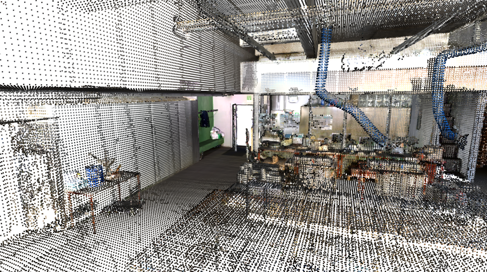
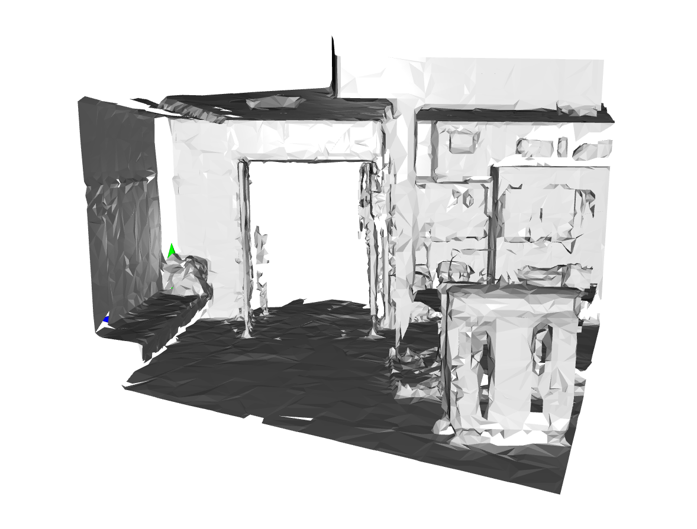
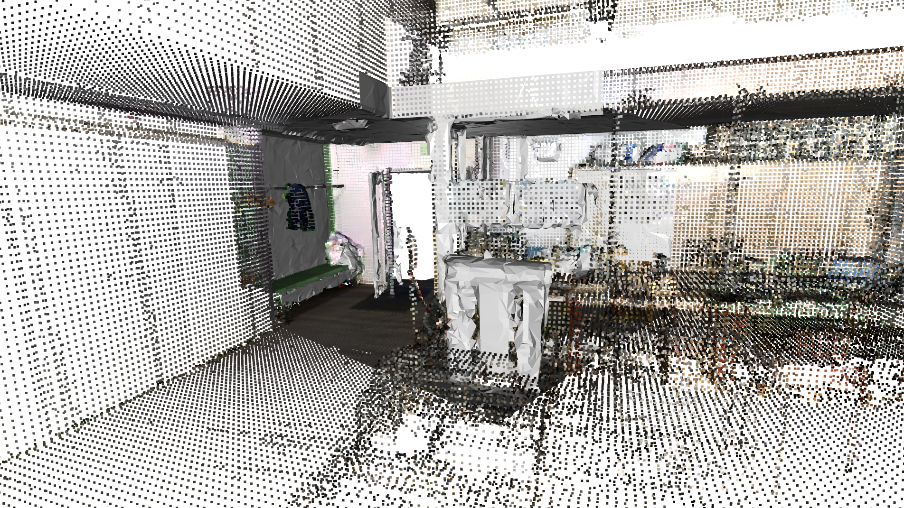
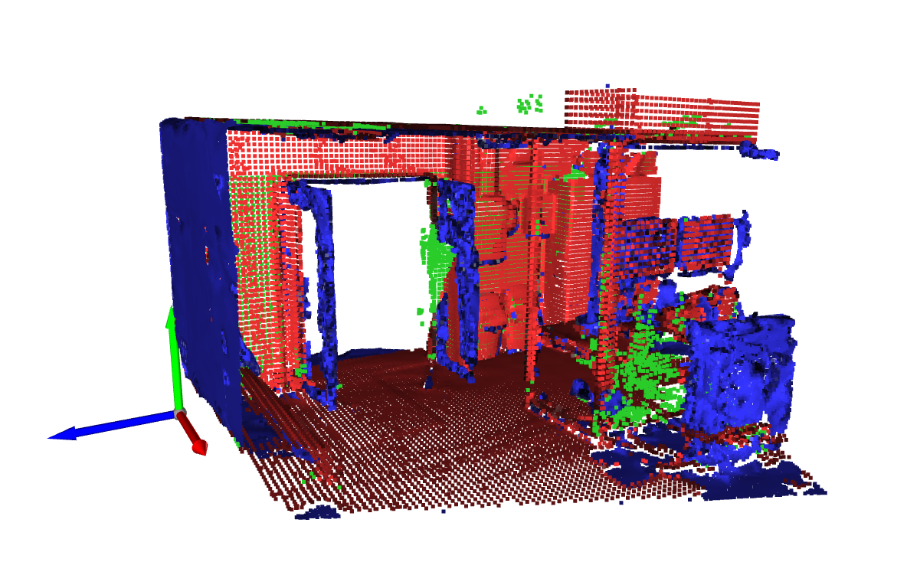
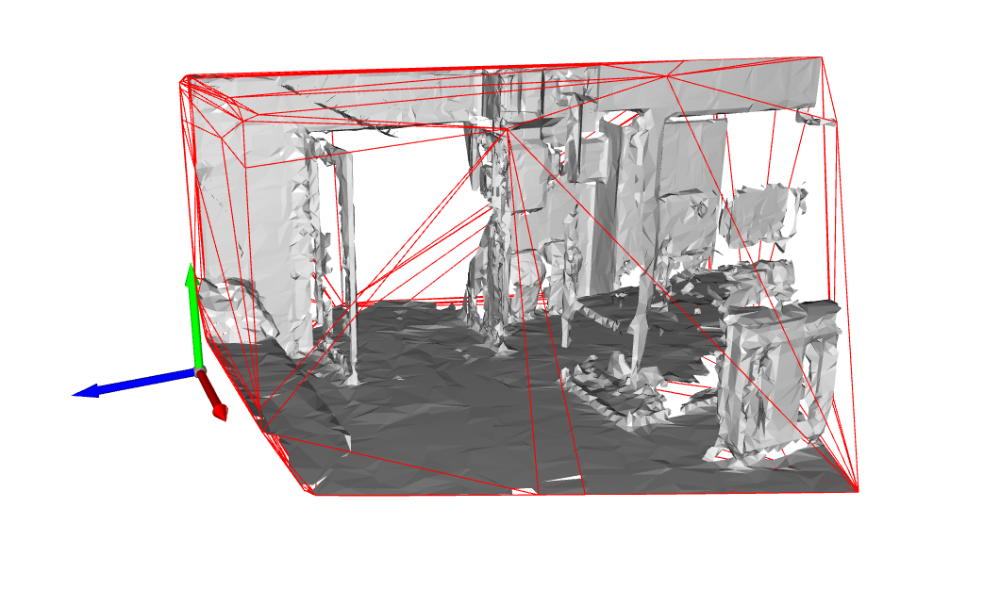
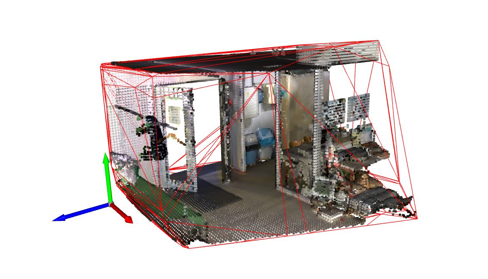
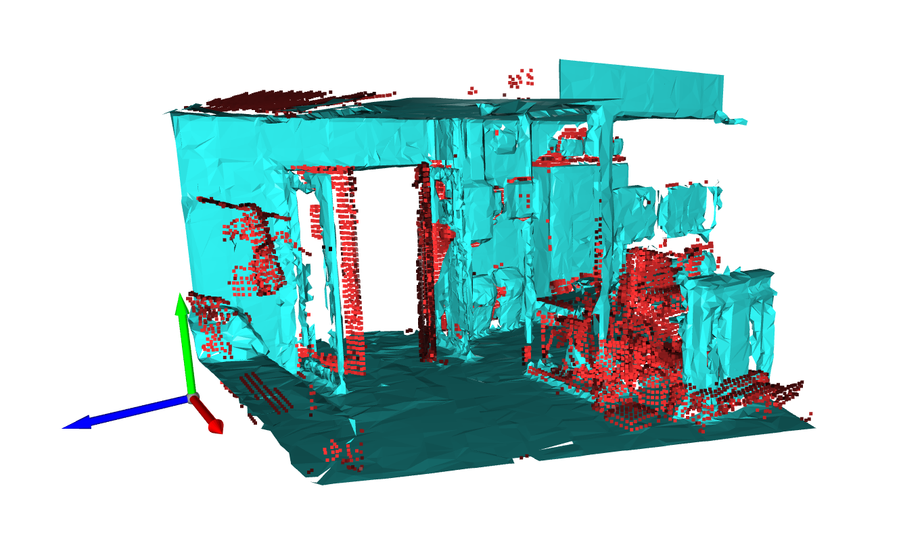
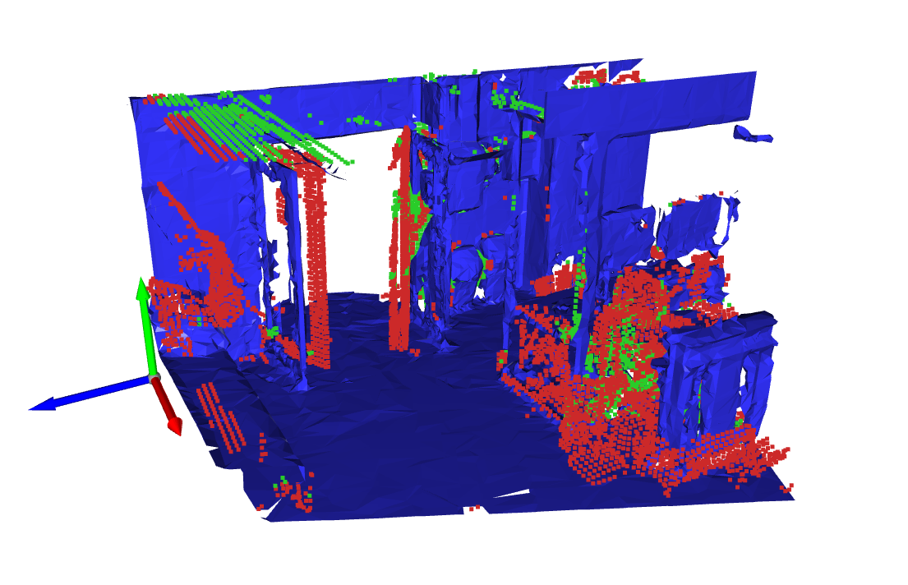
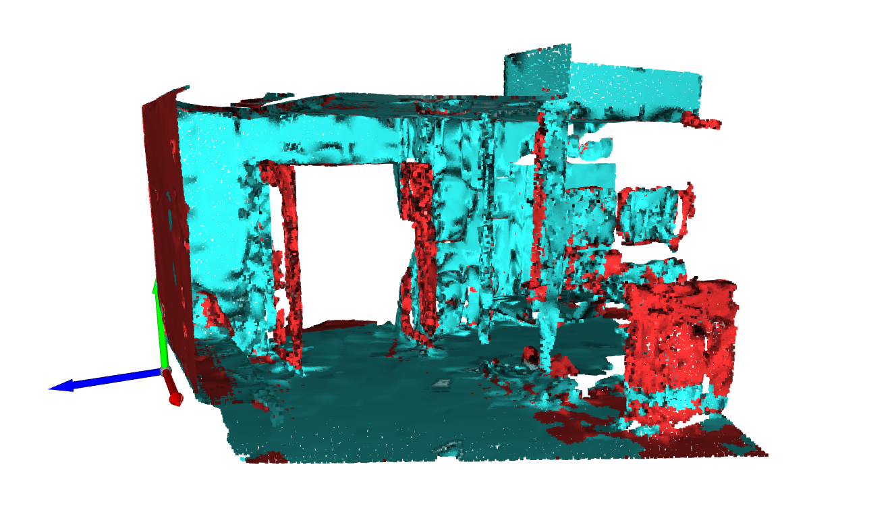

Combination Tools
The completion process is aimed at complementing existing large datasets with newer smaller datasets. It also aims to leave as much of the original dataset in tact as possible, assuming it’s more detailed and precise.
This testcase will go over the functionalities of the completiontools using a real dataset to showcase the different functions and how they work together.
Set Up
Defining the correct imports and unique parameters for the combination process.
from context import geomapi #Only needed for this example file
import geomapi.nodes as nodes
import geomapi.tools.combinationtools as ct
import geomapi.utils as ut
import geomapi.utils.geometryutils as gmu
import os
import numpy as np
import open3d as o3d
tresholdResolution = 0.05 # The max coverage distance in meters
ogGeometryPath = os.path.join(os.getcwd(),"../../../test/testfiles/PCD/voxel_grond_pointcloud.ply")
newGeometryPath = os.path.join(os.getcwd(),"../../../test/testfiles/MESH/GrondSampleMesh.obj")
Dataset
Is this testcase, two data sets are used:
The original data set is a pointcloud captured by a NavVis VLX sensor downsampled to 743.618 points.
The newer data set is a mesh capturde by a Microsoft Hololens containing 13.107 vertices and 23.112 triangles
Importing Geometries
Geometries can be either directly imported from a file or retrieved from a geomapi.GeometryNode
ogGeometry = gmu.get_geometry_from_path(ogGeometryPath)
newGeometry = gmu.get_geometry_from_path(newGeometryPath)
[Open3D WARNING] geometry::TriangleMesh appears to be a geometry::PointCloud (only contains vertices, but no triangles).
gmu.show_geometries([ogGeometry])
Image of the original Dataset
gmu.show_geometries([newGeometry])
 Image of the new Dataset
gmu.show_geometries([ogGeometry, newGeometry])

Single function
combine_geometry() is a compound function which performs the full algorithm and returns the combined geometry.
combinedGeometry = ct.combine_geometry(ogGeometry, newGeometry, tresholdResolution)
Covex hull created
Irrelevant points filtered
Covered poinys calculated
invisible points detected
new points filtered
geometries combined
gmu.show_geometries([combinedGeometry])

Image of the combined Datasets
Step-by-step
The combination algorithm is performed in 2 phases: the removal and the addition phase.
Removal phase: All the out-of-date points in the original mesh are removed to make room for the new points.
Addition phase: Only the new (uncovered) points from the new geometry are added, this is to ensure the existing original pointcould can keep as much relevant data as possible.
Removal Phase
Step 1: Create a convex hull of the newGeometry
In order to prevent false removal of the original geometry, we need to limit the evaluated points of the original geometry. This is why a convex hull is created to encapsulate all the relevant points.
newGeoHull = gmu.get_convex_hull(newGeometry)
gmu.show_geometries([gmu.get_lineset(newGeoHull), newGeometry])

Step 2: Filter out the irrelevant points in the ogGeometry
A subselection of the original geometry is made with the convex hull as boundary volume.
relevantOg, irrelevantOg = gmu.get_points_in_hull(ogGeometry, newGeoHull)
gmu.show_geometries([gmu.get_lineset(newGeoHull), relevantOg])

Step 3: Isolate the not covered points of the ogGeometry compared to the newGeometry
To determine which points are still relevant and therefor, should not be removed we perform 2 Checks, the first one being the Coverage check. This checks If the original points are also captured on the new dataset. if they are not, they are either no longer up-to-date and should be removed, or they were not visible to the scanner and should remain in the scan. This is where the second check comes in.
newGeometryPoints = gmu.mesh_to_pcd(newGeometry,tresholdResolution/2)
coveredPoints, unCoveredPoints = gmu.filter_pcd_by_distance(relevantOg, newGeometryPoints, tresholdResolution)
gmu.show_geometries([unCoveredPoints, newGeometry], True)

Step 4: perform the visibility check
The uncovered points are chacked agains the new mesh. assuming the new scanner has caoptured everything it can see, Points that are hidden behind the geometry were not visible during the scanning process. This check is performed by finding the closest faces to the points and comparing the normal direction. Points facing the faces could have been seen by the scanner and vise versa.
insideList, outsideList = ct.check_point_inside_mesh(unCoveredPoints.points, newGeometry)
visiblePoints = o3d.geometry.PointCloud()
visiblePoints.points = o3d.utility.Vector3dVector(outsideList)
invisiblePoints = o3d.geometry.PointCloud()
invisiblePoints.points = o3d.utility.Vector3dVector(insideList)
gmu.show_geometries([visiblePoints, invisiblePoints, newGeometry], True)

Addition Phase
Step 5: Filter the newGeometryPoints to only keep the changed geometry
Because we assume The original geometry is of better quality, we will only add points that are changed. Therefor we apply an inverted distance query from the new points to the existing geometry.
existingNewGeo, newNewGeo = gmu.filter_pcd_by_distance(newGeometryPoints, relevantOg, tresholdResolution)
gmu.show_geometries([newNewGeo, existingNewGeo], True)

Step 6: Combine the irrelevant, unchanged and changed geometry
The final step is combining the original irrelevant data, the unganged original data and the changed new geometry. The resulting geometry is a combination of both, aimed at retaining as much of the original as possible.
newCombinedGeometry = coveredPoints + invisiblePoints + newNewGeo
gmu.show_geometries([coveredPoints, invisiblePoints, newNewGeo], True)
Statistics
Code performance
from geomapi.utils import time_funtion
time_funtion(ct.combine_geometry,*(ogGeometry, newGeometry, tresholdResolution))
Covex hull created
Irrelevant points filtered
Covered poinys calculated
invisible points detected
new points filtered
geometries combined
Completed function `combine_geometry()` in 1.473 seconds
PointCloud with 749482 points.
from geomapi.utils import time_funtion
# Step 1: Create a convex hull of the newGeometry
newGeoHull = time_funtion(gmu.get_convex_hull,newGeometry)
# Step 2: Filter out the irrelevant points in the ogGeometry
relevantOg, irrelevantOg = time_funtion(gmu.get_points_in_hull,*(ogGeometry, newGeoHull))
# Step 3: Isolate the not covered points of the ogGeometry compared to the newGeometry
newGeometryPoints = time_funtion(gmu.mesh_to_pcd,*(newGeometry,tresholdResolution/2))
coveredPoints, unCoveredPoints = time_funtion(gmu.filter_pcd_by_distance,*(relevantOg, newGeometryPoints, tresholdResolution))
# Step 4: Perform the visibility check of the not covered points
invisibleUncoveredPoints = time_funtion(ct.get_invisible_points,*(unCoveredPoints, newGeometry))
# Step 5: Filter the newGeometryPoints to only keep the changed geometry
existingNewGeo, newNewGeo = time_funtion(gmu.filter_pcd_by_distance,*(newGeometryPoints, relevantOg, tresholdResolution))
# Step 6: Combine the irrelevant, unchanged and changed geometry
newCombinedGeometry = irrelevantOg + coveredPoints + invisibleUncoveredPoints + newNewGeo
Completed function `get_convex_hull()` in 0.002 seconds
Completed function `get_points_in_hull()` in 0.215 seconds
Completed function `mesh_to_pcd()` in 0.045 seconds
Completed function `filter_pcd_by_distance()` in 0.048 seconds
Completed function `get_invisible_points()` in 0.999 seconds
Completed function `filter_pcd_by_distance()` in 0.036 seconds
Point stats
print("removal Phase")
print("Reduced relevant points by", str(np.round(len(irrelevantOg.points) / len(ogGeometry.points)*100,1)) + "%")
print("Filtering the original geometry resulted in",str(np.round(len(unCoveredPoints.points) / len(relevantOg.points)*100,1)) + "% of the points being uncovered")
print("Performing a visibility check on the uncovered points resulted in",str(np.round(100 - (len(invisibleUncoveredPoints.points) / len(unCoveredPoints.points))*100,1)) +
"% of the points being visible and should be deleted")
print("this means",str(np.round(len(invisibleUncoveredPoints.points) / len(relevantOg.points),3)*100) + "% of relevant original points are removed from the dataset")
print("Addition Phase")
print("Coverage checking the new geometry resulted in",str(np.round(len(newNewGeo.points) / len(newGeometryPoints.points)*100,1)) + "% of the points being new")
print("In summary")
totalNewPoints = len(coveredPoints.points) + len(invisibleUncoveredPoints.points) + len(newNewGeo.points)
print("The new relevant part of the dataset consists of: ")
print(str(np.round(len(coveredPoints.points) / totalNewPoints*100,1)) + "% still relevant existing points")
print(str(np.round(len(invisibleUncoveredPoints.points) / totalNewPoints*100,1)) + "% inconclusive occluded points")
print(str(np.round(len(newNewGeo.points) / totalNewPoints*100,1))+ "% new updated points")
removal Phase
Reduced relevant points by 95.5%
Filtering the original geometry resulted in 36.2% of the points being uncovered
Performing a visibility check on the uncovered points resulted in 56.6% of the points being visible and should be deleted
this means 15.7% of relevant original points are removed from the dataset
Addition Phase
Coverage checking the new geometry resulted in 26.4% of the points being new
In summary
The new relevant part of the dataset consists of:
54.4% still relevant existing points
13.4% inconclusive occluded points
32.2% new updated points